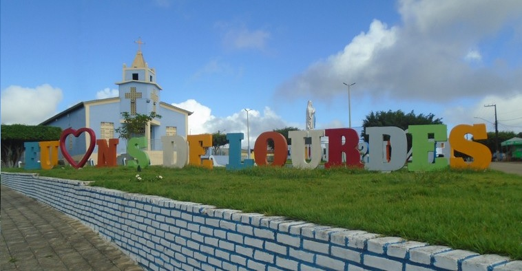

Nossa Senhora de Lourdes
História
O Município de Nossa Senhora de Lourdes começou em 1810, com a chegada do casal pernambucano Joaquim José e Ana Josefa da Rocha. Eles fugiram da seca que assolava o sertão pernambucano, passaram por Piranhas, em Alagoas; Gararu, em Sergipe, e chegaram a Escurial, povoado lourdense banhado pelo Rio São Francisco.
Logo depois eles largaram a embarcação e penetraram na mata fechada até chegar a uma grande lagoa, onde existia uma considerável quantidade de antas e resolveram fazer morada. Em 1950, o lugar denominado anteriormente de Lagoa das Antas passou a se chamar Arraial de Antas. Por volta dos anos 70 e 80, a povoação teve um acentuado crescimento, com a chegada de novas famílias.
Entre elas estavam os Santos, de Cedro do São João; Junqueira, de Siriri; Feitosa, de Porto da Folha; e Eufrázio, de Lagoa Funda. A esta época, a povoação pertencia ao Município de Gararu e permaneceu assim até 1938, quando passou a pertencer ao Município de Canhoba. Nesse mesmo ano o cônego Lauro de Souza Fraga mudou o nome de Antas para Nossa Senhora de Lourdes.
Em 1953 o Povoado passou a ser oficialmente uma vila. Dez anos depois foi elevado à categoria de cidade.
fonte: https://cidades.ibge.gov.br/brasil/se/nossa-senhora-de-lourdes/historicoPontos Turísticos
Cachoeira do Poção de Pedras
Também conhecida como Cachoeira de Lourdes, tem aproximadamente 15m de altura, sendo considerada a maior do estado. Está cercada por paredões rochosos e vegetação diversificada, oferecendo condições para a prática de rapel.
Dados Gerais de acordo com o IBGE
| Prefeito (a) | Laercio Gomes de Andrade |
| Vice-Prefeito (a) | Gerinaldo Ferreira da Silva |
| Site do município | https://nsdelourdes.se.gov.br/ |
| Área territorial | 83,767 km² |
| População estimada | 6.509 pessoas |
| Densidade demográfica | 76,95 hab/km² |
| IDHM | 0,598 |
| PIB per capita | R$ 10.757,98 |